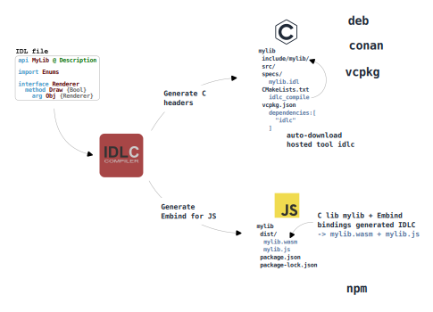

|
idlc 1.5.10
Interface Definition Language Compiler
|
|
idlc 1.5.10
Interface Definition Language Compiler
|
This project is not intended for production use. The tool is primarily being developed for my personal needs — to generate C APIs for C libraries from IDL specifications, as well as to automatically wrap the resulting C libraries for other languages, enabling them to be used as native libraries.
Below is an online demo of the compiler:
For example, the IDLC tool itself uses its own functionality to generate its API:
idlc_compile function);idlc_compile function monitors changes in the specs (.idl files) and, if necessary, rebuilds the headers in the ./include/idlc directory. These headers provide declarations for the C API, which is implemented by the C++ library. Of course, these headers are committed and distributed alongside the library.
Even for this online demo, the tool uses itself to generate the JavaScript library, packaging the WASM module for native use in JavaScript code. Exposing an API that has classes with methods, properties, and other familiar constructs.
The compiler is distributed as a library with a C API for embedding, as well as a command-line tool for standalone compilation. In other words, it can be used both as an embedded compiler and as a separate tool.
As for the IDL language itself — it is an abstract language not tied to any specific programming language but designed to accommodate a wide range of languages. For example, it supports properties and case-sensitive symbols, but it does not allow two different symbols that differ only in case (due to case-insensitive languages), and so on.
The workflow of this tool can be roughly represented by the following diagram:

While this project is not intended as an industrial-grade solution, it serves as a practical example of:
For a step-by-step guide on embedding the compiler into your project (to enable API support and generate native wrappers for other languages), check out the Quick Start.